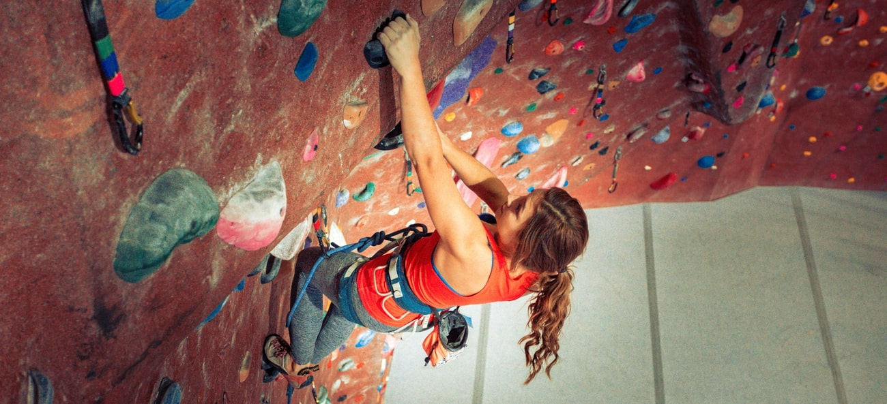

Rock Climbing 101
Cambodia Page

Getting Started
- Find your gym. Rock climbing gyms are both great for beginners and a great place to meet people.
- Get your gear. There are so many options out there, you can find gear for nearly any budget.
- Harness (a good harness should fit you snugly, but it shouldn't hurt)
- Shoes (rock climbing shoes should be uncomfortably tight, go down 1/2 size)
- Carabiner (titanium is best, but some other alloys will also work fine)
- Belay Device (if you're feeling fancy, maybe opt for a GriGri)
- Chalk Bag (a good chalk bag is a climber's favorite tool)
- Rope (optional, but a good investment if you plan on climbing outside)
- Bring a friend. Unless you plan on bouldering every time, climbing is always a team sport.
Different Types of Holds
- Jug - everyone's favorite hold; big enough to fit a whole hand
- Pinch - held using a squeezing grip with the hand
- Sloper - a large hold with no edge and often no grip
- Crimp - an incut edge that requires all the power of your fingers
- Pocket - smaller hole, usually only big enough for two or three fingers
- Gaston - also called a sidepull, designed to be pulled from the side
- Undercling - a jug that faces downwards
World's Hardest Climbs
Return to Top